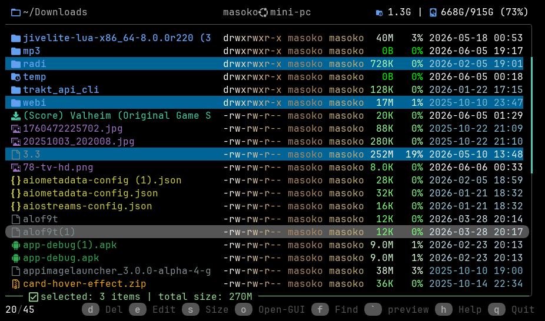
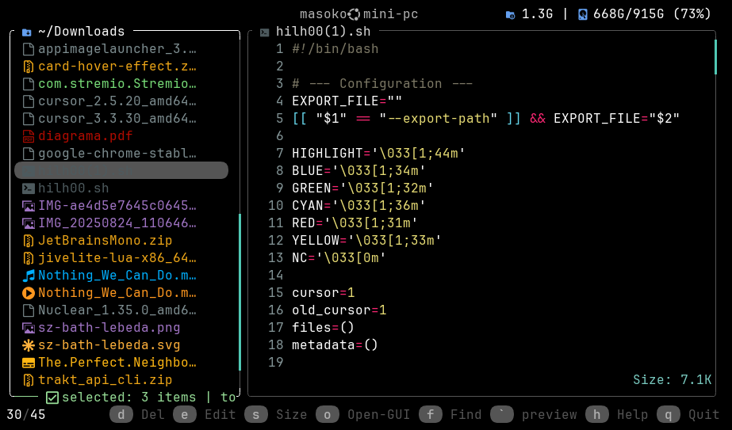
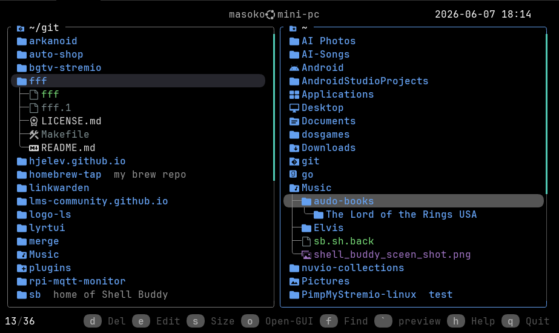
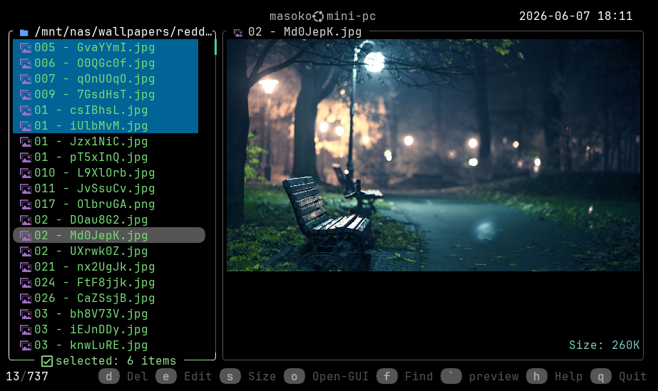
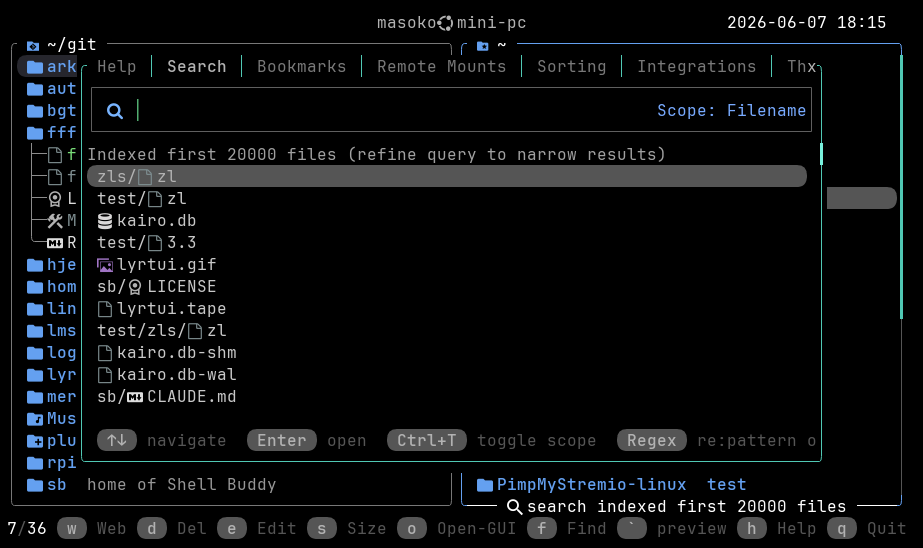
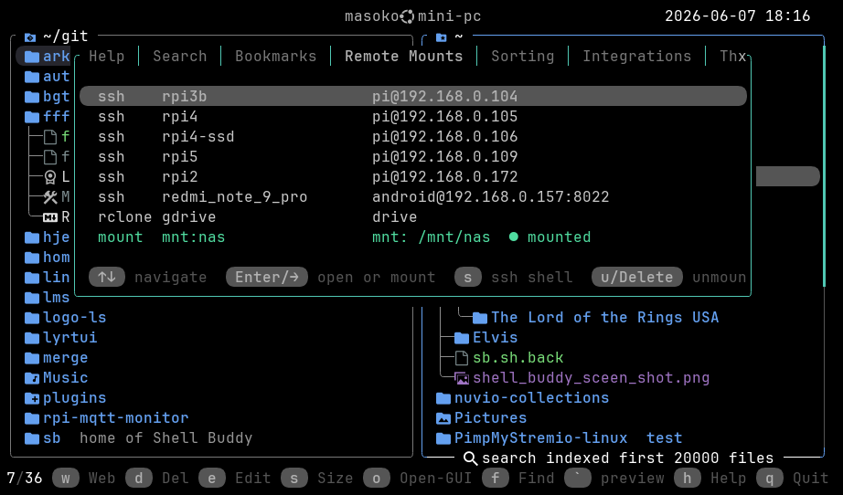
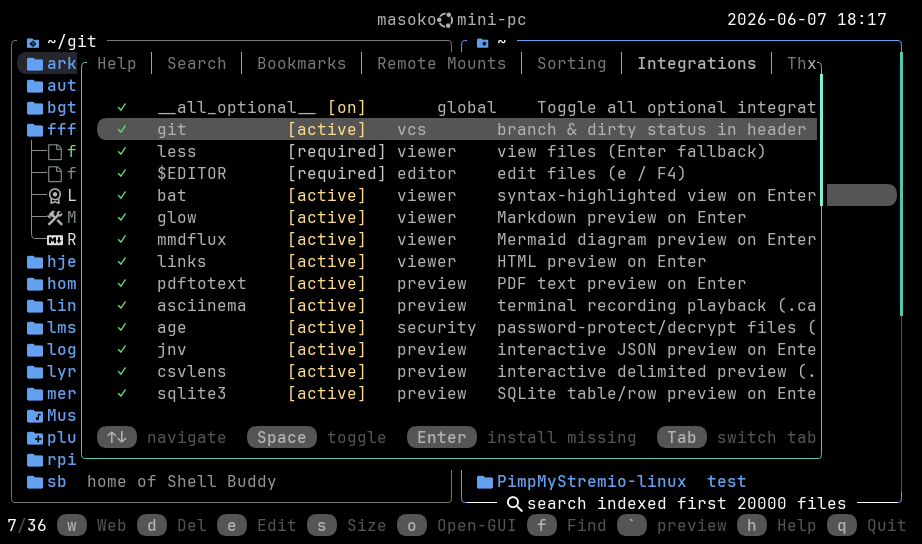
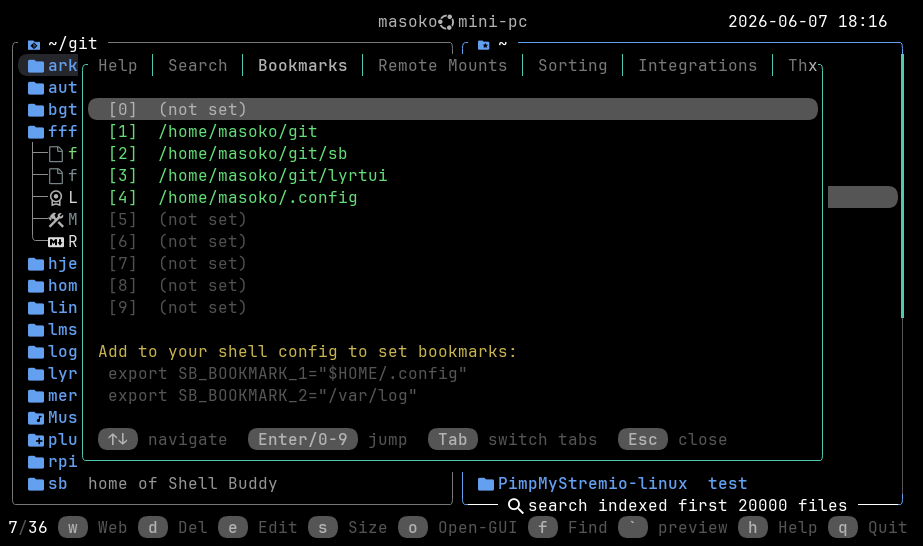
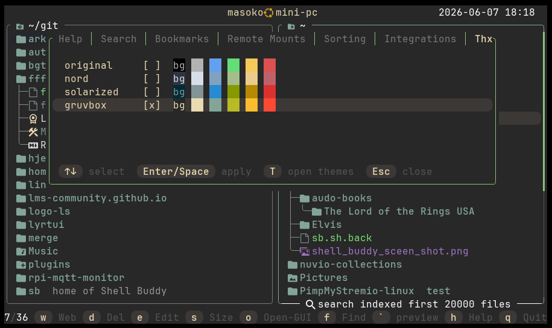
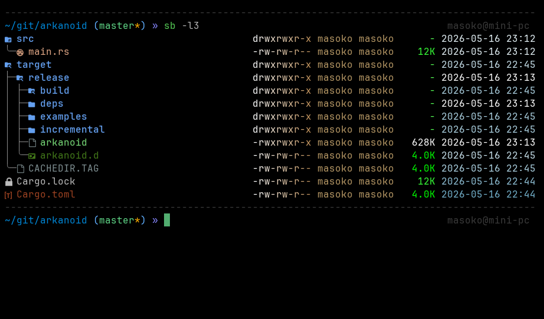

Dual panels, rich previews, fuzzy search, remote mounts, themes — and more.









Drop the TUI entirely and pipe clean, aligned output.
# Current directory listing
$ sb -l
# Include hidden entries
$ sb -la
# Recursive size + percent-share columns
$ sb -l --total-size
# Full tree, or tree limited to depth 2
$ sb -t
$ sb -l2
# Open a file with the best available viewer
$ sb README.md